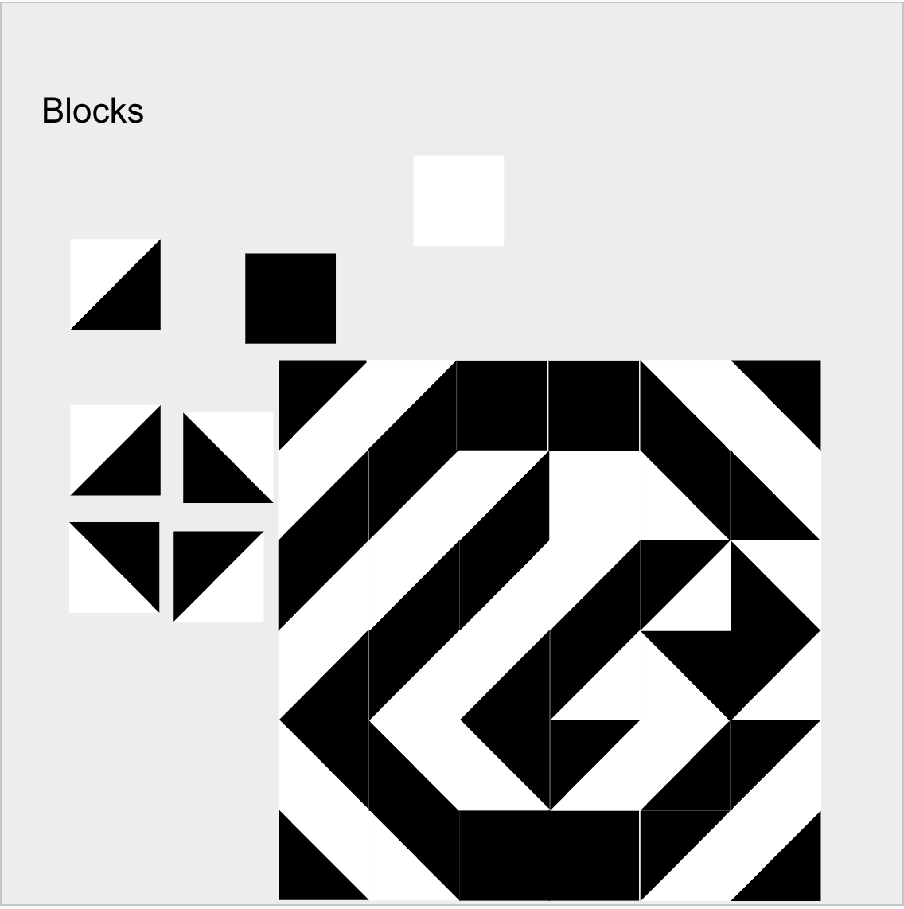

Pattern Designer
Oct 2021
Overview
This game involves racing against each other to use the black and white cards to create the pattern given. I made this after learning about the Block Design Test and thought it would make for an interesting game.
Types of Cards
There are varying difficulties, ranging from a 3x3 grid all the way up to a 6x6 grid. Additionally there are "building blocks," which include fully white squares, fully black squares, and half white-half black squares which can be rotated.

Planning
I planned out all the patterns literally using Google Slides, and then used Photoshop to actually make the cards and have the patterns be even.
